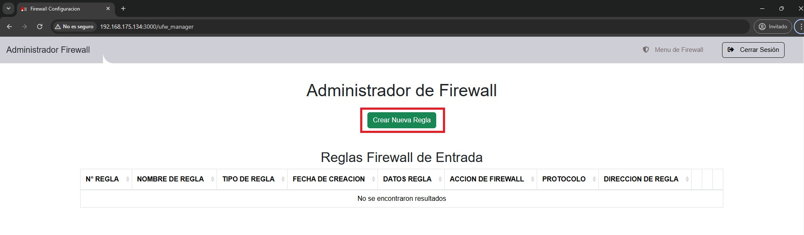

Administrador de Firewall¶
Firewall ¶
Un firewall es una barrera de seguridad utilizada para proteger una red de comunicaciones, como una red de área local o un sistema informático, contra accesos no autorizados y otros riesgos de seguridad.
¿Qué es un firewall? ¶
Un firewall es una medida de seguridad fundamental para proteger una red informática o un sistema de computadoras contra amenazas externas e internas. Funciona como una barrera entre una red privada y otras redes, como Internet, controlando el tráfico de datos que entra y sale de la red basándose en un conjunto de reglas predefinidas.
Inspecciona y controla el tráfico que entra y sale de la red según estas reglas.
Funciones de un Firewall ¶
- Control del tráfico de red: Controla y filtra el tráfico de red basándose en reglas predefinidas, permitiendo bloquear o permitir el acceso a recursos específicos según las políticas de seguridad establecidas.
- Protección contra amenazas externas: Actúa como una barrera entre la red local y Internet, bloqueando intentos de acceso no autorizado desde fuentes externas como hackers, malware y virus.
- Protección contra amenazas internas: Controla el tráfico dentro de la red para prevenir amenazas internas y actividades maliciosas.
- Segmentación de red: Divide la red en segmentos más pequeños y controla el tráfico entre ellos.
- Monitoreo y registro de actividad: El firewall puede monitorear y registrar la actividad de red para detectar posibles intrusiones, identificar patrones de tráfico sospechosos y generar informes de seguridad para su análisis.
- Aplicación de políticas de seguridad: Permite establecer políticas de seguridad personalizadas para controlar el acceso a recursos específicos.
Reglas de Firewall¶
Las reglas del firewall son instrucciones configurables que determinan cómo debe gestionarse el tráfico de red entrante y saliente en un sistema informático o en una red. Estas reglas especifican qué tipo de tráfico se permite o se bloquea según diversos criterios, como direcciones IP, puertos, protocolos y otros atributos.
Cuando el firewall recibe un paquete de datos de red, lo evalúa según las reglas configuradas y decide si permitirlo o bloquearlo. Las reglas del firewall suelen basarse en criterios como la dirección IP de origen y destino, el protocolo de red, los puertos de origen y destino, y otros datos del encabezado del paquete.
Después de iniciar sesión en el sistema con las credenciales proporcionadas, accedemos a la opción marcada en rojo, como se muestra en la imagen.
En la sección de firewall, nos encontraremos con tres tablas que están divididas en reglas de entrada, reglas de salida y reglas predefinidas. Estas últimas son reglas que no se pueden eliminar ni desactivar.
1. Crear Reglas¶
La creación de reglas de firewall es fundamental, ya que define las políticas que determinan qué tipo de tráfico se permite o se bloquea en el servidor. Estas reglas constituyen la primera línea de defensa contra amenazas externas y contribuyen a garantizar la seguridad y el rendimiento del sistema.
Nota
Al establecer reglas claras y precisas, se controla qué tipo de tráfico puede acceder al servidor, lo que ayuda a prevenir intrusiones no autorizadas y a proteger los datos sensibles. Es esencial diseñar estas reglas con cuidado, considerando tanto los requisitos de seguridad como las necesidades operativas del sistema.
Para crear reglas de firewall es importante seguir los pasos que se detallan a continuación:
-
Dentro de la interfaz de la opción de firewall,
presionamos el botón
Crear Nueva Regla. Se nos desplegará
un formulario como se muestra en las imágenes a
continuación:

-
En el formulario que se abre, debemos configurar las
reglas teniendo en cuenta los siguientes puntos:
- Nombre de la regla: Definiremos el nombre de la regla que vamos a configurar, como un identificador de lo que queremos lograr al crear la regla.
- Tipo de regla: En esta parte, debemos elegir entre las diferentes opciones de tipos de reglas que queremos crear. Puede ser configurar una dirección IP, un puerto, una dirección IP y un puerto específico, dominios o tipos de contenido.
- Acción de la regla: Esta opción nos permitirá seleccionar si queremos permitir o denegar/rechazar la comunicación desde o hacia el servidor.
-
Dirección de la Regla: Esta
opción nos permite elegir si queremos que la
comunicación entre o salga del servidor.
Nota
Al crear una regla de entrada o salida y establecer un valor de IP y puerto, debemos interpretar lo siguiente para que la regla funcione como queremos. Si la regla es de entrada, debemos especificar la dirección IP pública desde donde queremos acceder al servidor y el puerto por el cual vamos a ingresar al servidor. En caso de establecer una regla de salida, debemos especificar la dirección IP pública de la red del dispositivo al que queremos tener una comunicación de salida y especificar el puerto del servidor al cual nos conectaremos.
- Dirección IP: En este campo, debemos ingresar el valor de la IP a la cual queremos dar o denegar el permiso de entrada o salida del servidor.
- Puerto: En este campo, debemos ingresar el valor del puerto mediante el cual el servidor aceptará o denegará los intentos de acceso o salida del servidor.
- Nombre de Dominio: En este campo, debemos ingresar el valor del dominio al cual queremos que el usuario tenga o no tenga acceso mediante la web.
- Contenido de Red: En este campo, se nos mostrará una lista completa de los tipos de contenido que podemos encontrar en la web y que podemos bloquear o permitir directamente, sin tener que ingresar dominio por dominio.
- Protocolo: En este campo, debemos ingresar el protocolo mediante el cual estableceremos la comunicación, ya sea TCP o UDP.
- Con los conceptos claros de cada tipo de regla que podemos crear, debemos definir la regla que queremos crear. Ingresamos los valores como se muestra a continuación y luego presionamos en Crear Regla.
- Para verificar que la regla se creó correctamente, debe mostrarse un mensaje de confirmación indicando que la regla fue creada correctamente. También podremos visualizarla en la tabla, dependiendo de la dirección que le dimos a la regla.
De esta manera, podremos crear una nueva regla para permitir o denegar el tráfico para el servidor.
2. Desactivar o Activar Reglas¶
Después de haber creado una regla, encontraremos en la tabla la opción para desactivar o activarla, en caso de que deseemos inhabilitar temporalmente la comunicación con una IP o puerto específico.
Para confirmar que la regla se desactivó o activó sin problemas, veremos un mensaje de confirmación como respuesta al realizar esta acción. Además, en la tabla, la regla desactivada se mostrará con el botón de desactivación de color gris.

3. Eliminar Reglas¶
En la tabla, encontraremos otra opción que nos permitirá eliminar completamente una regla si ya no la necesitamos o la consideramos relevante. Para hacerlo, simplemente presionamos el botón de color rojo con el texto Eliminar Regla. Al hacer clic, se abrirá un mensaje de confirmación para confirmar la eliminación, donde debemos seleccionar nuevamente Eliminar.
Para verificar que la acción se realizó correctamente, debemos observar un mensaje de Eliminación de Regla. Además, en la tabla, se actualizarán los registros después de eliminar la regla.
4. Visualizar Reglas¶
Como última opción dentro de las reglas, podremos visualizar la información de la regla creada. Esto incluye la dirección IP o puerto configurado, y en el caso de ser una regla de dominio o contenido, podremos ver los dominios involucrados.
Reglas de Firewall por Contenido¶
En el menú principal, buscamos la opción Reglas por Contenido y accedemos a ella. Si aún no tenemos configurada ninguna regla en la primera opción del menú de Configuración de Reglas, aparecerá un mensaje indicando que no hay datos disponibles. En caso de que ya tengamos creada alguna regla por contenido, se mostrará un tipo de menú acordeón con todos los tipos de contenidos de las reglas por contenido que se hayan creado. Al hacer clic en cualquiera de ellos, veremos la tabla de los dominios involucrados en ese tipo de contenido.
1. Crear Reglas¶
En el acordeón que muestra los tipos de contenidos de las reglas creadas, ubicamos el contenido al cual queremos agregar un dominio que no esté presente o consideremos que deba ir en ese contenido. Luego, presionamos el botón Agregar Dominio y se desplegará un formulario que debemos completar:
- Campo Dirección de la Regla: esta opción nos permite seleccionar si queremos que la comunicación entre o salga del servidor.
- Campo Acción de la Regla: esta opción nos permitirá escoger si queremos permitir o denegar/rechazar la comunicación desde o hacia el servidor.
- Campo Nombre de Dominio: en este campo debemos ingresar el valor del dominio al cual queremos permitir o denegar el acceso mediante la web.
2. Desactivar o Activar Reglas¶
Después de haber agregado una nueva regla para un nuevo dominio o con los registros existentes en la tabla, una de las opciones que encontraremos es la posibilidad de desactivar o activar momentáneamente las reglas que consideremos innecesarias o para permitir temporalmente la comunicación con un dominio específico.
Para confirmar que la regla se ha desactivado o activado sin conflicto, observaremos un mensaje de confirmación como respuesta inicial. Además, en la tabla, la regla desactivada mostrará el botón de desactivación en color gris.
3. Eliminar Reglas¶
Otra opción que encontraremos en la tabla es la posibilidad de eliminar completamente una regla en caso de que ya no la necesitemos o la consideremos irrelevante. Para ello, presionamos el botón de color rojo Eliminar Regla. Al hacerlo, se abrirá un mensaje de confirmación solicitando la confirmación para eliminar la regla. Luego, procedemos a hacer clic en Eliminar.
De la misma manera que con las funciones anteriores, para confirmar que la acción se realizó correctamente, debemos visualizar un mensaje de Eliminación de Regla. Además, en la tabla, los registros estarán actualizados.